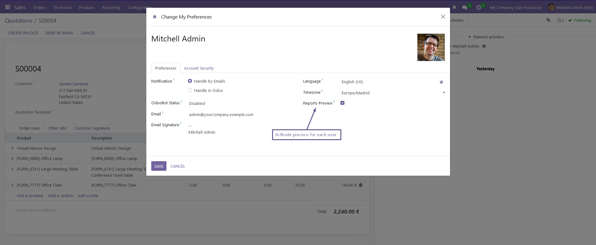
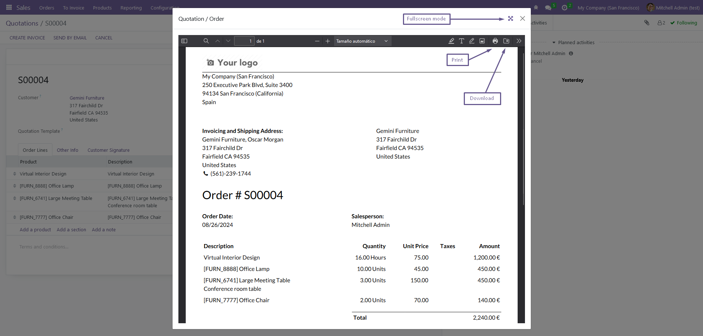
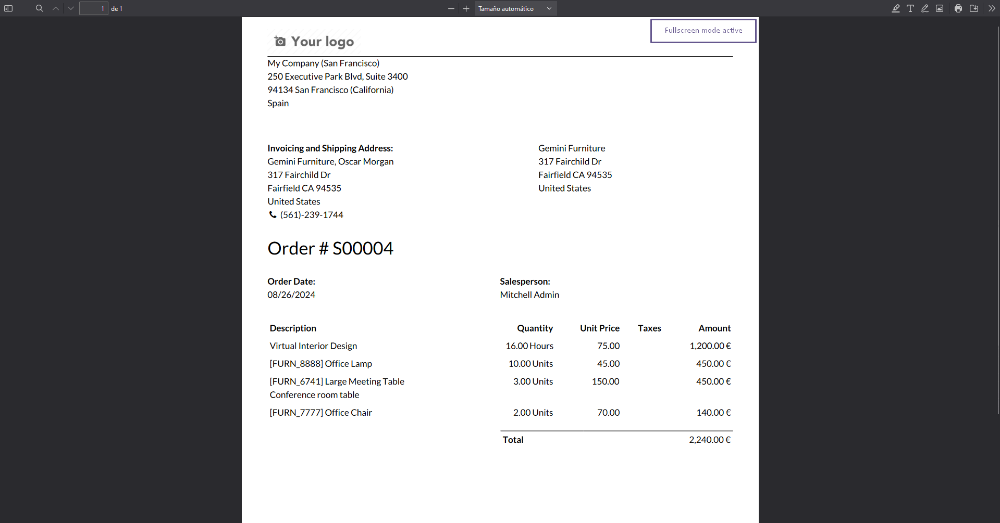

With this module the user can decide how want's to open the PDF documents, either to download them directly (Odoo's default option) or to display a modal window with a preview.
Print preview for PDF documents
Configurable in user preferences
View documents in fullscreen mode
This app its translated to Spanish, Portuguese, German, French, Italian and Russian.
Simply print a report and the preview window will open if you have it enabled in your user


